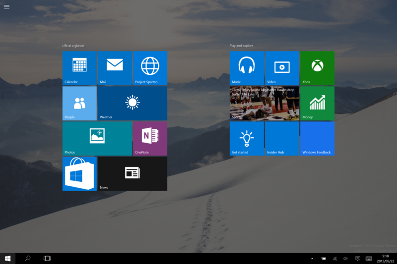
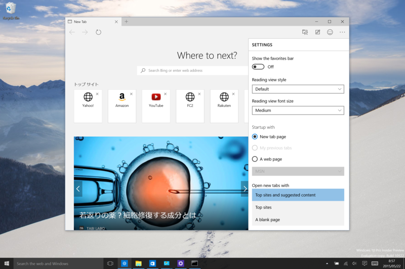
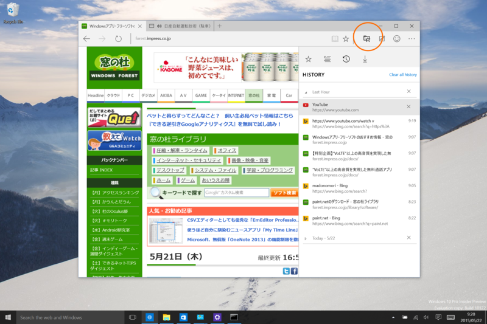
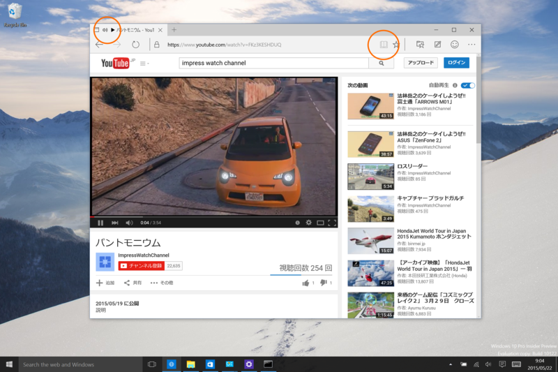
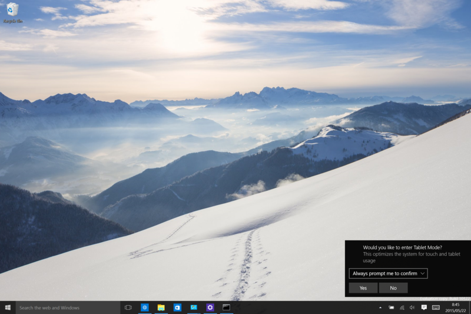

Windows 10 Insider Preview 10122
公開日：

毎回アップデートでコケてる気がする。ﾌｧｯｷｭｰ
しょうがないので PC のリフレッシュを試してみるけど、これもアップデートできず。そればかりか Windows 10 が起動しなくなったので、結局フルリセットをかけたところ、やっとアップデートできた。
あとで知ったのだけど、
rundll32.exe pnpclean.dll,RunDLL_PnpClean /DRIVERS /MAXCLEAN
というコマンドを試すと、うまくいく環境もあるらしい。ﾌｧｯｷｭｰ
- Installer stuck at 18% when upgrading from Windows 10 (10074 to 10122) - Enterprise Mobility Tips - Site Home - TechNet Blogs
- Windows 10 build 10074から10122へのアップグレードに失敗する話 | ブチザッキ
詳細は“日本三大雑記”のひとつである“ブチザッキ”などを参照のこと。

このビルドでは“スタート”が結構変わっているのだけど（タブレットモードで［スタート］を押すとなぜか検索ペインまで出てきてﾌｧｯｷｭｰ）、あんまり興味ないので、今回は「Project Spartan」（「Edge」って名前になるんだっけ？）の方を見ていく。

新規タブページ。検索機能にトップページ、おススメのコンテンツがのっかったエラいリッチなものになってる。MSN のしょっぱいバージョンみたいなデザインだな。まだテスト中みたいで、これが最終というわけでもなさそう。
リッチ過ぎて重く（感じ）て気に入らない場合は、Web 検索とトップサイトのみにしたり、空っぽのページに変更できるようになっている。

あと、“履歴”ビューが新しくなったらしい。アドレスバー右隣にあるフォルダーに星がついたアイコンをクリックすると、お気に入りとかダウンロード履歴を表示するサイドペインが現れる。

あとは音の出てるタブにアイコンが出るようになったとか、リーダービューアイコンにページをめくるようなアニメーションが追加されたりとか、そんな感じ。“InPrivate”機能も付いたらしいが、エロサイトとかあんまりいかないので使ったことない。

1日使った感じでは、安定性はまぁまぁ、って感じもする。タブレットモードとの切り替えを頻繁に行うと、ウィンドウのリサイズがおかしくなったりするけれど、まぁ、本番には直るんじゃないかな。知らんけど。7月末に出るとして、そろそろコードをフリーズさせなきゃいけない気がするんだけど、本当に間に合うのかなぁ。